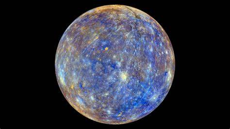
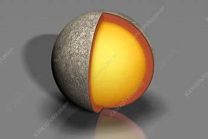

Mercury can refer to both a chemical element and a planet. As an element, Mercury (symbol Hg) is a shiny, silvery metal that is unique because it is liquid at room temperature. It has been used in thermometers, barometers, and electrical devices, although its use has declined because it is highly toxic to humans. Mercury exposure can cause serious health problems if inhaled or touched. Naturally, it is found in a mineral called cinnabar. As a planet, Mercury is the smallest in our Solar System and the closest to the Sun. Its surface is rocky and full of craters, resembling Earth's Moon.
Go Back
Ancient Observations:
Early civilizations:
Mercury has been known since ancient times, likely observed by the Babylonians as early as 3,000.
In many ancient cultures, the planet was associated with gods or messengers due to its rapid movement across the sky.
Greek and Roman mythology:
The Greeks named the planet after the god Hermes, who was a messenger of the gods, due to its quick movement across the sky.
The Romans adopted this name, calling it Mercury.
Telescope Observations:
Galileo's Observation (1610):
Mercury was first observed through a telescope by Galileo Galilei in 1610.
However, due to its proximity to the Sun, it was difficult to observe in detail, and little was known about it at the time.
18th Century:
In the 18th century, astronomers like William Herschel made more detailed observations, but Mercury’s fast orbit and proximity to the Sun made it a challenging target for study.
© 2025 Manjusri . All rights reserved.